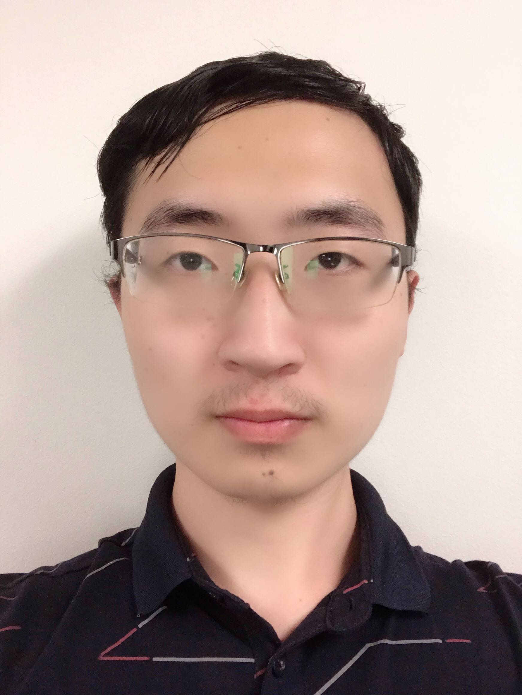
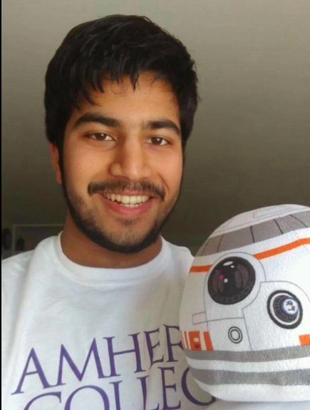
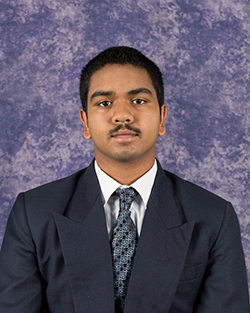
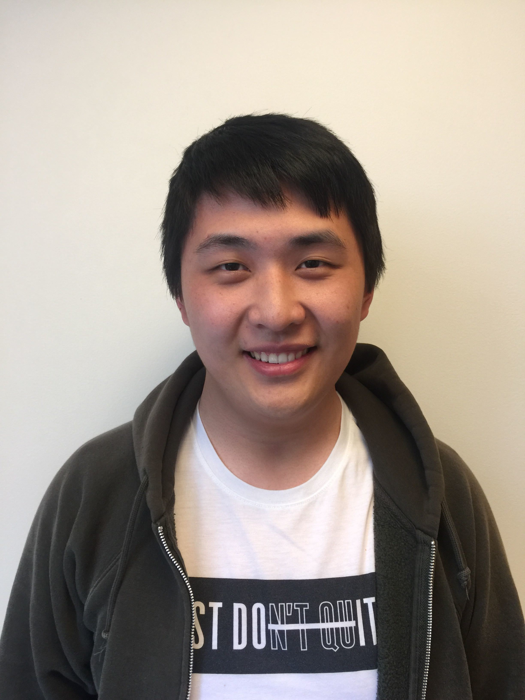

Contact Us
Qingxuan (Max) Jiang
Qingxuan (Max) Jiang is a student at Cornell University double majoring in Mathematics and Computer Science (Class of 2021). His main research interests are Optimization, Numerical Analysis and their applications to Machine Learning.
Email: qj46@cornell.edu
Tian Lan
Tian Lan is from the Chinese University of Hong Kong. He is a PIRIP student of 2019 Cornell Summer REU and is interested in Functional Analysis, Probability and Harmonic Analysis.
Email: 1155091994@link.cuhk.edu.hk
Shashank Sule
Shashank is a Class of 2020 Mathematics major at Amherst College. His research interests include applied mathematics and analysis. He will be writing a thesis on dimensionality reduction problems in applied harmonic analysis in his senior year. When he isn't doing mathematics, he can be found reading a non-fiction book or learning to play the harmonica. In an alternate universe, he would have been a cartographer. He was once a Chemistry major, but a class on Fourier Analysis enticed him to the world of mathematics. He wants to continue exploring it in graduate school.
Email: ssule20@amherst.edu
Sreeram Venkat
Sreeram Venkat is a Math and Physics Major at North Carolina State University (Class of 2021). His research interests are in mathematical modeling, and he is currently working on improving conservation in surrogate models. Sreeram also learns Indian Classical Carnatic music and has given many performances in the US and India. In his free time, Sreeram likes to play competitive Pokémon and Magic: The Gathering.
Email: srvenkat@ncsu.edu
Xiaoduo Wang
Xiaoduo Wang is a student from University of Wisconsin Madison (Class 2020). He majors in mathematics and philosophy, and his area of interest is mathematical logic. At free times, he enjoys to read fictions or watch movies, TV series that subvert expectation AND have decent endings (so NOT something like Game of Thrones).
Email: Xwang845@wisc.edu